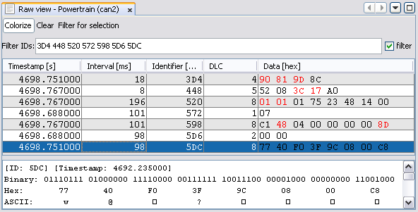
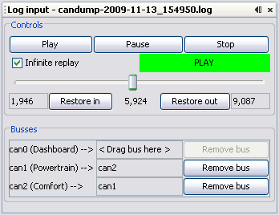
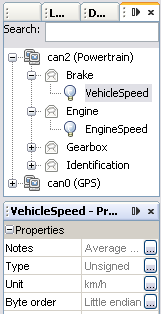
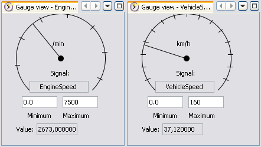
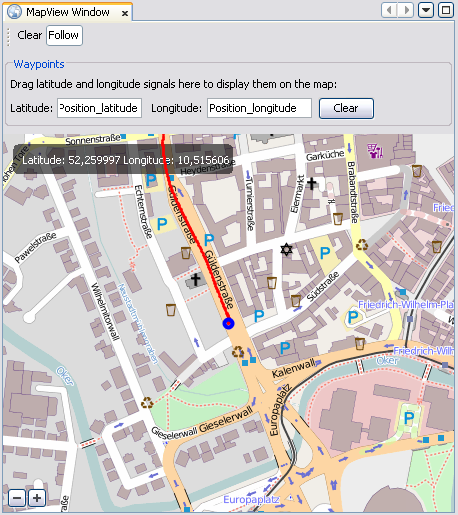

This tutorial will show you how to set up a working Kayak setup.
If you already have a device with a socketcand you wish to connect to
you can skip the steps (1) and (2).
(1) Find out about SocketCAN
Kayak is based on SocketCAN and uses some of the features it provides.
To connect Kayak to a real CAN bus you first have to understand the SocketCAN principles
and set up a Linux machine with SocketCAN support. Then you have to connect a compatible
CAN adapter or controller and create a new bus.
For further instructions check the
SocketCAN project
or read the SocketCAN tutorials I wrote (German):
Part 0
Part 1
Part 2
(2) Set up socketcand
To use Kayak you need a socketcand on the Linux machine where the SocketCAN busses
were created.
socketcand will probably not be distributed in binary form but can be compiled
from source using the following steps
(assuming you have the essential build tools and git installed):
$ git clone https://github.com/linux-can/socketcand.git
$ cd socketcand
$ autoconf
$ ./configure
$ make clean
$ make
$ sudo make install
For more details check the
socketcand project page.
socketcand comes with init and rc scripts that allow you to start the daemon
at boot time.
To change the settings edit /etc/socketcand.conf and read the manpage.
(3) Install and configure Kayak
The easiest way to install Kayak is in binary form. Download the current version
at
this page.
Run the installer for your platform and Kayak is set up.
(4) Create a new Project
Open Kayak and select the Projects window on the left. Add a new Project
to the list by selecting File->New Project. Give the project a meaningful name.
After selecting the project you can add new busses to it. Right click on the Project
and select New bus.... Then choose a name for the bus like Powertrain.
You can add and remove projects and switch between them by right clicking on a project
and selecting Open project.
(5) Connect to a socketcand
Select the Connections window on the right side. If
auto discovery is working in your network you should see some entries in the
tree under Auto discovery.
You can also add manual connections via the menu or the toolbar. These connections
are characterized by URLs of the schema socket://busname@host:port.
They will show up in the Recent folder.
If you want to connect an existing bus in your project, drag the connection onto
the Connection: None element of the bus.
You can also drag a connection to a project and create a new bus in the project
with the connection already set.
(6) View raw data on the bus

When you have set up your project and all busses you need hit the play icon in the
toolbar. Kayak will then start to open connections and in the bottom right corner
of the application you can see the current simulation time.
At first you will see no data. Right click on a bus you want to monitor and select
Open RAW view. A new window will open showing you the frames that are on
the bus.
You can do this for all busses you want to watch and change the window layout to your
needs.
In a raw view you can:
- resort the frames by clicking on a table header
- enable a colorized presentation where bytes that change often are
highlighted in read
- clear the list of all frames
- filter for specific IDs either by typing in the filter text field or selecting
rows in the table and clicking Filter for selection. Filters can be toggled
by the filter checkbox. Note that filtering not only helps you stay on
top of things but also reduces the network load because less frames are transmitted.
After closing all views for a bus the connection will be terminated.
Record a log file
Play a log file

Kayak handles all
log files
you place in the Kayak log file folder. After installation
this folder is
[USER_DIR]/kayak/log/ but you can change it in the settings
Every file in the folder named
*.log | *.log.gz is displayed in Kayak.
You can open the
Log files window and browse them sorted by platform.
If you want to play a log file you first have to create a project and add busses.
You don't need to connect them to a socketcand becaus local loopback replay is possible.
Select the log file and open it.
In the new window you see a list of all busses in the log file. To connect a project bus
to a bus in the log file drag it into the log input window. This way you can easily
change bus configurations or only connect the busses you are interested in.
After that you are ready to start the replay. Hit play in Kayak, open the bus views you want
to watch and hit play in the Log input view to start replay.
The bar will move as the log file is playing to indicate the current position.
Below you can see the current start and stop time. They may be changed using the
Set in
and
Set out buttons as known from video cut software.
If you want the replay to start over at the end check the
Infinite replay checkbox.
You can pause, stop and play the replay at any time.
View interpreted data

Bus descriptions are handled the way log files are handled. The default folder is
[USER_DIR]/kayak/descriptions/ and all .kcd files placed there are displayed
in the Descriptions window.
When you expand a file in this window you see all the bus descriptions a file contains.
To load a description drag the bus from the description window to the Description: None
node of a bus in you project. After doing this configuration open the Messages window.
It contains all messages and signals of busses for which descriptions were loaded.
This list can get quite huge so use the Search box if you are looking for a specific
item. If you select a message or signal the Properties window shows all the information
about this element.
Currently there are two views that can display interpreted data. The first is the
Message View. After opening it you can drag signals and messages there and you will see
their current value in a tabular.
The second is the Gauge view. Open a gauge view and drag a single signal into it.
This view is useful for fast changing values like vehicle speed or engine speed.

Map view

To watch GPS signals from a log file on an Open Streetmap map you first need a network definition
that contains latitude and longitude signals.
Create a new project and connect this description to the bus on which the GPS signal is transmitted.
After opening a map view you can drag those
signals from the Message View into the corresponding fields of the Map view
and the position will be show live on the map.
You can move the map around and zoom in or out. Also you can clear the waypoint trail and deactivate
following of the current position.
If you are behind a proxy you first need to configure the proxy settings in Kayak to enable
automatic tile loading from the Open Streetmap servers.